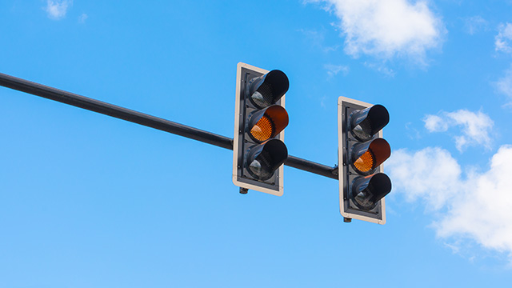

What is Safe Light?
Safe-Light is a state of the art in-car program that would assist drivers to make the correct decision when approaching a changing traffic light. Many people misjudge yellow lights when approaching an intersection and Safe-Light would insure the driver has all the required information to make the correct decision.
How do we solve this?
Safe-Light would drastically decrease the amount of accidents caused by traffic lights, saving lives. With almost all accidents able to be avoided, Safe-light is the next step in car safety. Other features would include decreasing the volume when emergency vehicles are nearby, and notify the driver of any accidents in the area.
Features